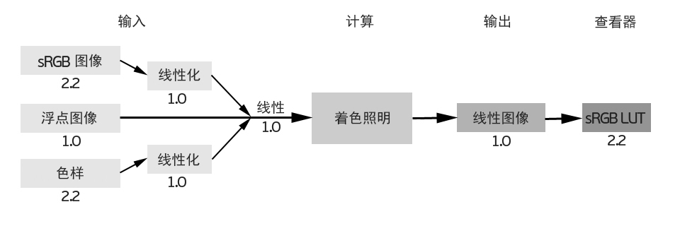
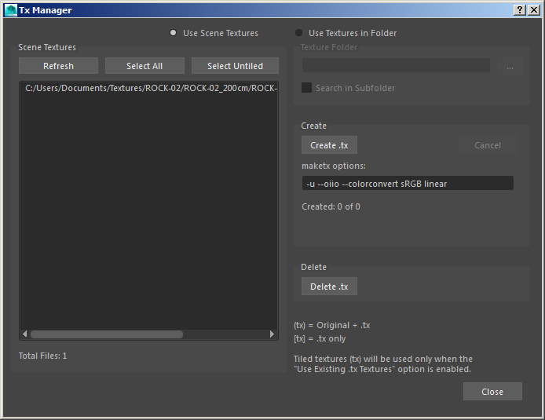

Gamma 校正属性已弃用，不再出现在 Maya 2017 中。您应使用 Maya 的原生颜色管理设置。
信息：有关在 Maya 2017 中将颜色管理与 MtoA 结合使用的详细信息，请单击此处。
Gamma 校正控件有助于用户确保他们在放射测量线性空间（也称为“线性工作流”）中工作。线性工作流可确保在场景中交互的所有元素（灯光颜色、纹理和着色器颜色）与实际灯光量保持线性关系，从而确保渲染器以物理上精确的方式正确计算灯光。这很有必要，因为灯光在物理世界中也具有线性特征（如果光子数加倍，颜色值也会加倍）。
| 非线性工作流：不正确 | 线性工作流：正确 |
虽然所有计算都需要在线性颜色空间中进行，但所有查看设备（输入和输出）都需要在经过 Gamma 校正的空间（如 sRGB Gamma）中显示。
如果未采用正确的线性工作流进行渲染，所产生的问题主要有灯光看起来过分夸张，以及颜色看起来不自然。遇到这样的问题时，美工人员可能会尝试调整场景中的照明、衰减、颜色等参数，但这只能在一定程度上缓解问题。下面的图像显示了美工人员使用不同的 Gamma 输出渲染图像时的常见错误：
| 太亮。未对纹理进行颜色管理且输出为 sRGB（不正确）。 | 太暗。未对纹理进行颜色管理且颜色输出为线性（不正确）。 | 对输入进行颜色管理且输出显示为 sRGB - 线性工作流（正确）。 |
建议将渲染图像输出为 EXR（线性浮点格式），以维持线性工作流。
渲染流程可分为以下步骤：

如何使输入呈线性
渲染到磁盘（例如使用批渲染）的图像需使用支持 LUT 的图像查看器来查看。如果通过不支持 LUT 的标准查看器查看渲染后的图像，相比之下，这些图像看起来会太暗。
渲染到磁盘（例如使用批渲染）的图像需使用支持 LUT 的图像查看器来查看。如果通过不支持 LUT 的标准查看器查看渲染后的图像，相比之下，这些图像看起来会太暗。
Arnold 会扫描纹理内容（不依赖于扩展），所有不属于浮点的内容都被视为执行了 Gamma 烘焙，即使图像嵌入了不同的颜色空间也是如此。
可以使用 make tx 工具将纹理转化为线性空间，从而确保所有纹理在渲染之前都是线性的。可以选择使用 linear、sRGB 和 Rec709。例如，可使用以下命令：
maketx --colorconvert sRGB linear C:/Program Files/Autodesk/Arnold/maya2023/crayons.jpg 使用 maketx 工具转化 Crayons.jpg 图像的颜色空间
也可以使用 TX 管理器(TX Manager)轻松将纹理转化为 .tx 格式。该管理器中提供了一个选项框，可用于向转化过程中添加参数。

带有“maketx --colorconvert sRGB linear”选项的“Tx 管理器”(Tx Manager)窗口
以下是使用 Arnold 和最新 Maya 版本时的颜色管理基本工作流。
在 Maya 中启用颜色管理。
“MtoA 显示 Gamma”(MtoA Display Gamma)仅应用于渲染视图，如果希望由 Maya 处理显示颜色管理，则可将其设置为 1。
如果使用纯色，请在颜色拾取器中设置颜色：要与特定 sRGB 值匹配，请将“混合颜色空间”(Mixing Color Space)设置为“显示空间”(Display Space)，并输入 sRGB 值，这时您在样例中看到的将是渲染的内容。
如果使用的是文件纹理，请先对文件进行线性化处理，然后再将其加载到 Maya 中（您可以在转化为 .tx 期间进行线性化处理）。